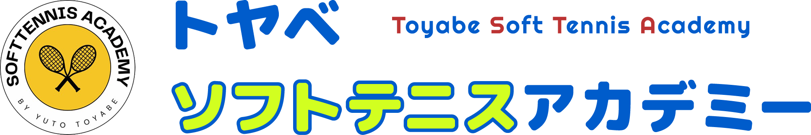

トヤベソフトテニスアカデミーのホームページにお越しいただき、ありがとうございます。
私は当教室のコーチと代表を務める 鳥屋部（とやべ） 雄斗と申します。
当教室では、小学生から高校生の生徒さんを対象に、基礎を大切にしたテニスレッスンを実施しています。生徒様一人ひとりのレベルに合わせてクラス分けを行うため、学校の部活動よりもきめ細かな指導が可能です。また、幼少期からひとりのテニスプレイヤーとして競技を続けてきた経験を活かして、伝わりやすい指導と生徒様のやる気を引き出すレッスンを実施します。
レッスンにおいては、最初から正解を100％で教えるのではなく、生徒様自身が考えて行動できる機会を設けています。そのため、テニスのプレイに限らず、お子様の人生において必要となる「主体性」もはぐくむことが期待できます。
当教室のレッスンを通じて「テニスをプレイの楽しさ」を感じながら、「大会で勝ちたい」「もっと強くなりたい」といった目標を一緒に叶えていきませんか？
私は同級生がソフトテニスをしていた影響で、幼少期からテニスをプレイしていました。学生時代には県大会や東北大会での優勝、インターハイの出場などを経験し、社会人となってからは未来ある子どもたちのためにテニスプレイヤーとしてのスキルを活かしたいと思うようになったのです。
以前、教育実習で母校の中学校にてテニスを一か月間教える機会がありました。子どもたちの頑張りもあり、いつもは地区大会2回戦で負けてしまっていたチームを県大会3位になるまで育て上げることができました。こうした経験を通じて、テニスをプレイする楽しさを感じながらレベルアップできる、そんなテニス教室を開くことにしたのです。
当教室では、戦術よりも身体の使い方などの基礎固めをメインとしてレッスンを行っています。これは、ジュニアからスタートした私自身が、小・中学生の時期に基礎を身に付けることが一番大切と感じているからです。学校の部活動における顧問の先生は、競技の専門家ではないため、打ち方をはじめとした基礎を教えてもらうことは難しいものです。月4回のレッスンで、今よりもっとテニスを楽しく、そして上手にプレイできる自分を目指していきましょう！
【主な戦績】
【ポジション・指導】
特に前衛が得意ですが、後衛を教える技術もございます。外部コーチの依頼も受け付けておりますので、ぜひお問い合わせください。
【保有資格】
教職員免許状